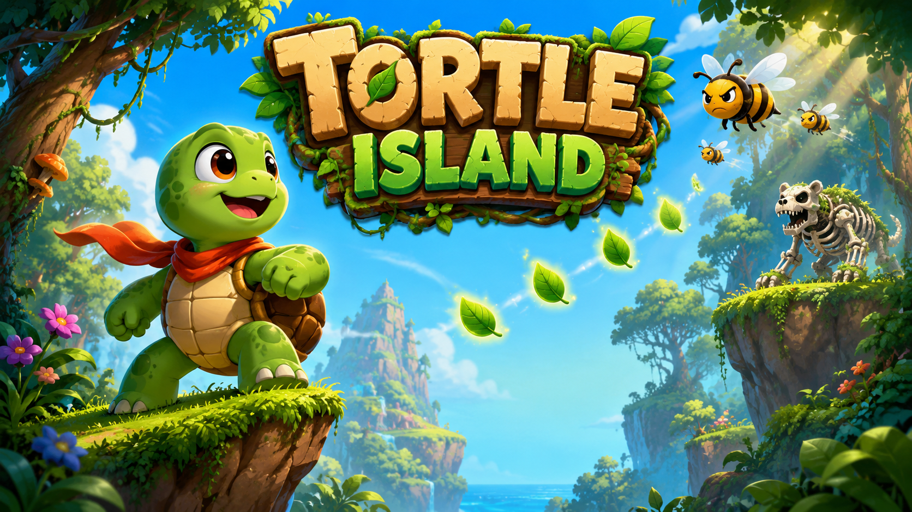
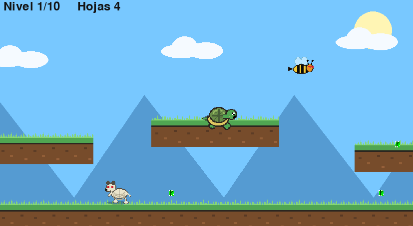

Objetivo
Completa los 10 niveles y termina con el máximo número de hojas posible. Cada hoja cuenta: usar la concha o morir reduce la puntuación final.
Juego de plataformas 2D
Ayuda a Tortle a superar 10 niveles con abejas asesinas, osos esqueleto, arqueros, cocodrilos de fuego y una planta carnívora final.
El botón apunta a la última Release de GitHub. Si aparece “Not Found”, primero hay que crear una Release y subir el ZIP del juego.

La aventura
Completa los 10 niveles y termina con el máximo número de hojas posible. Cada hoja cuenta: usar la concha o morir reduce la puntuación final.
La concha protege, pero cuesta hojas. La turboconcha derrota enemigos, pero consume hojas muy rápido. El reto está en decidir cuándo usarla.
Escuela de programación de juegos
Tortle Island es una creación básica que puede ser utilizada por creadores nóveles, niños y familias para explorar e interpretar la arquitectura de un videojuego: menús, niveles, personajes, enemigos, música, puntuación, ranking y pantalla final.
El proyecto también sirve para practicar modificando el juego. Los personajes y elementos visuales pueden cambiarse editando los archivos de imagen con Pixel Art, Paint, Piskel, GIMP o cualquier editor sencillo. Basta con conservar los nombres de archivo y reemplazar las imágenes dentro de sus carpetas.
assets/player/Sprites de Tortle.assets/enemies/Enemigos como abejas y osos esqueleto.assets/world/Suelo, hojas y elementos del mundo.assets/menu/Portada, Game Over e imágenes de menú.assets/audio/Música y efectos de sonido.
Enemigos
Vuelan cada vez más rápido a medida que avanzan los niveles.
Desde el nivel 5 disparan flechas contra Tortle.
En el nivel 10 aparece una planta carnívora que dispara hielo.
Cómo jugar